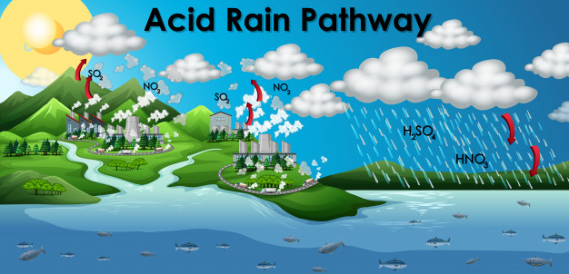

Киселинният дъжд се получава, когато серен диоксид (SO2) и азотни оксиди (NOX) се отделят в атмосферата и се транспортират от вятърни и въздушни течения. SO2 и NOX реагират с вода, кислород и други химикали, за да образуват сярна и азотна киселина. След това те се смесват с вода и други материали, преди да паднат на земята. Докато малка част от SO2 и NOX, които причиняват киселинни дъждове, са от природни източници, като вулкани, по-голямата част от него идва от изгарянето на изкопаеми горива. Основните източници на SO2 и NOX в атмосферата са: Изгаряне на изкопаеми горива за генериране на електричество. Две трети от SO2 и една четвърт от NOX в атмосферата идват от електрически генератори. Превозни средства и тежко оборудване. Производство, нефтени рафинерии и други отрасли. Ветровете могат да издухат SO2 и NOX на дълги разстояния и зад граница, което прави киселинен дъжд проблем за всички, а не само за тези, които живеят близо до тези източници.
